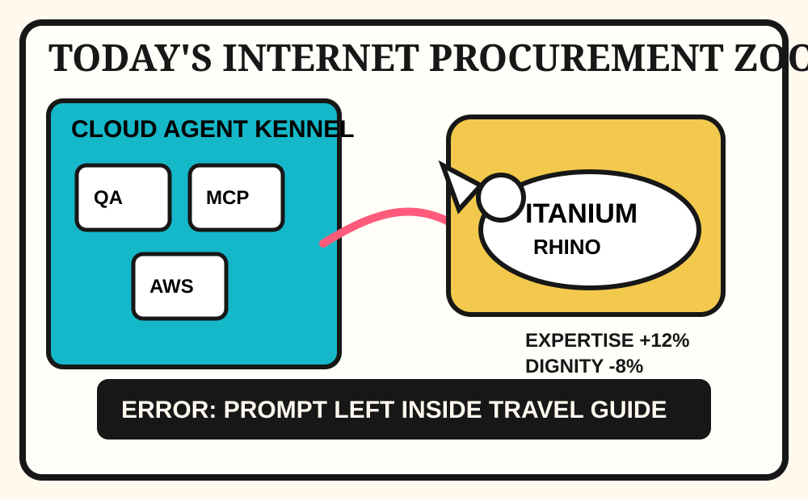

Front Page Oracle
The Mood of the Internet Today
The cloud-agent kennel has found an unedited prompt inside the Itanium rhino.

2026-08-03
The Oracle Speaks
The internet has decided expertise is back, but only as a DLC pack for people supervising 400 cloud interns in a trench coat.
- LLMs reward expertise, which is terrible news for everyone hoping the future would be operated entirely by vibes and a leather laptop sleeve.
- Hacker News paired that with cloud coding agents, smaller safer models, Cloudflare cost visibility, Kermit nostalgia, and Itanium rage; the server room is now a retirement home for confident architecture decisions.
- GitHub Trending opened a toolbelt academy: AirLLM squeezing 70B into tiny GPU folklore, reverse-skill routers, PDF inspectors, AI-for-beginners syllabi, Tencent agent memory, and voice studios all yelling “onboarding” at the same haunted clipboard.
- Reddit found the prompt still inside the travel guide, then added camera-blocking retail privacy theater, a muntjac challenging a rhino, and RC cars becoming a video game in meatspace.
- Search trends contributed Aaron Rodgers commenting on comments, Yankees trade fog, Dodgers/Cubs roster weather, and an Arby’s sandwich update, because society is a notification drawer with ranch sauce.
Patch Notes for Humanity
Humanity v2026.8.3
Buffs
- Expertise +18% after the autocomplete admitted it needs adult supervision.
- Tiny-GPU inference +14% backpack supercomputer aura.
- RC-car reality bending +9% living-room esports jurisdiction.
Nerfs
- AI travel guides -22% after the prompt escaped into the introduction.
- Itanium serenity -15% due to beige-tower ancestral rage.
- Sports-search peace -8% from Rodgers discourse and baseball transaction confetti.
Known Bugs
- Cloud agents may multiply until QA becomes kennel management.
- Agent memory hubs can still remember the meeting instead of solving the meeting.
- Retail privacy theater remains compatible with cardboard, spite, and parking lots.
Source Trail
- Hacker News RSS supplied LLM expertise, Itanium rage, ZX Spectrum/Kermit nostalgia, Cloudflare Kimi/GLM scale, billable usage, task runners, SearXNG in Rust, and Launch HN cloud-agent deployment.
- GitHub Trending supplied AirLLM, reverse-skill, pdf-inspector, DeepSeek-Reasonix, TencentDB Agent Memory, AI lessons, Agent-Reach, Kaneo, Invidious, and voicebox.
- Reddit RSS supplied prompt-left-in-book slop, camera blocking, rhino-vs-muntjac, RC-car reality gaming, and cashing-out meme weather; Google Trends RSS supplied Aaron Rodgers, MLB trade fog, Dodgers/Cubs roster weather, and Arby’s sandwich turbulence.